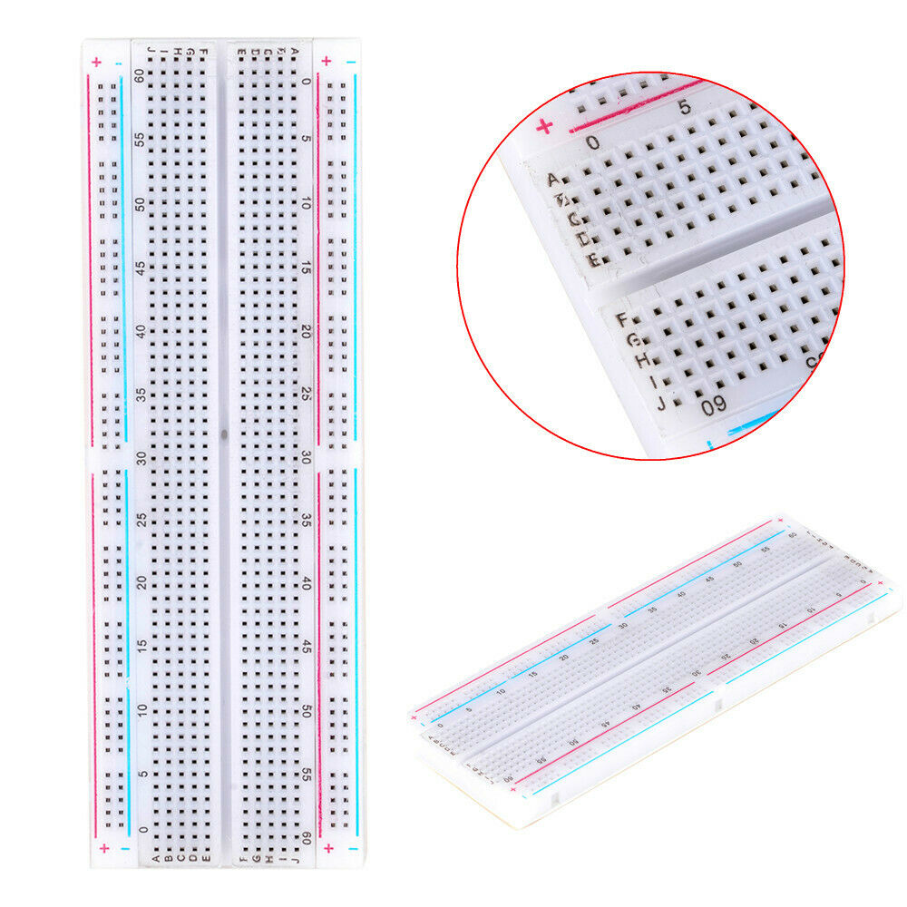
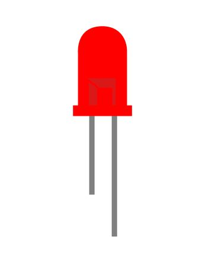
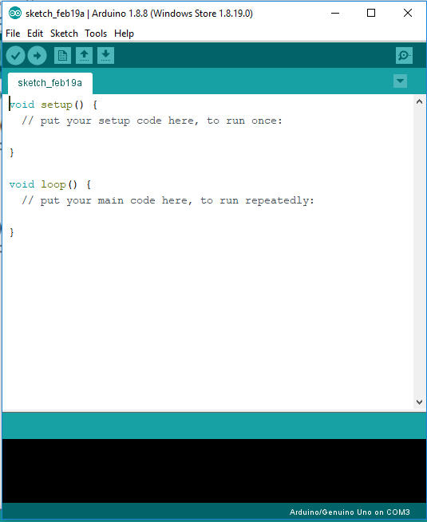

LED Control Project
This is an introductory project
Materials Needed
-
 Arduino Uno
Arduino Uno
You can also use any other board just make sure you select it.
add_shopping_cart -
//
Breadboard
Wire all your components without having to solder.
add_shopping_cart -
 Jumper Wires
Jumper Wires
Easier to plug into the breadboard than regular Wires However normal wires can also be used to serve the same purpose.
add_shopping_cart -

LEDs
Pick any size that suits your needs.
add_shopping_cart
Method
1. Download the Arduino IDE or you can use the Online Editor.
2. Copy and paste the code in your Arduino editor.
/*Control four LEDs using the digital outputs of the Arduino board
02/19/2019
by NeviHax#9483
*/
#define LED1 8
#define LED2 9
#define LED3 10
#define LED4 11
// gives names to the LEDs which we can refer to instead of using the pinMode function
void setup() { // the setup function runs once when you press reset or power the board
pinMode(LED1, OUTPUT);
pinMode(LED2, OUTPUT);
pinMode(LED3, OUTPUT);
pinMode(LED4, OUTPUT);
// this tells the board whether the component is an input or an output
}
// the loop function runs over and over again forever
void loop() {
digitalWrite(LED1, HIGH);//turns LED1 on and all the other LEDs off
digitalWrite(LED2, LOW);
digitalWrite(LED3, LOW);
digitalWrite(LED4, LOW);
delay(1000);
digitalWrite(LED1, LOW);//turns LED2 on and all the other LEDs off
digitalWrite(LED2, HIGH);
digitalWrite(LED3, LOW);
digitalWrite(LED4, LOW);
delay(1000);
digitalWrite(LED1, LOW);//turns LED3 on and all the other LEDs off
digitalWrite(LED2, LOW);
digitalWrite(LED3, HIGH);
digitalWrite(LED4, LOW);
delay(1000);
digitalWrite(LED1, LOW);//turns LED4 on and all the other LEDs off
digitalWrite(LED2, LOW);
digitalWrite(LED3, LOW);
digitalWrite(LED4, HIGH);
delay(1000);
}
3. Explaining the code
#define LED1 8
#define LED2 9
#define LED3 10
#define LED4 11
This part of the code names the pins with the corresponding LED.
So we can refer to the pin by using its name instead of its number.
This helps to make it easier because you don't have to memorise which
pin is connected to each component of your project.
void setup() {
pinMode(LED1, OUTPUT);
pinMode(LED2, OUTPUT);
pinMode(LED3, OUTPUT);
pinMode(LED4, OUTPUT);
}
Remember that the setup code only runs once.This will prove useful in
future projects. However today, we are using it only to tell the Arduino
board whether the pins are inputs or outputs.
void loop() {
digitalWrite(LED1, HIGH);
digitalWrite(LED2, LOW);
digitalWrite(LED3, LOW);
digitalWrite(LED4, LOW);
delay(1000);
digitalWrite(LED1, LOW);
digitalWrite(LED2, HIGH);
digitalWrite(LED3, LOW);
digitalWrite(LED4, LOW);
delay(1000);
digitalWrite(LED1, LOW);
digitalWrite(LED2, LOW);
digitalWrite(LED3, HIGH);
digitalWrite(LED4, LOW);
delay(1000);
digitalWrite(LED1, LOW);
digitalWrite(LED2, LOW);
digitalWrite(LED3, LOW);
digitalWrite(LED4, HIGH);
delay(1000);
}
The code which is in void loop will continue to repeat and run over and over again.
This is the place (in most cases) where you will write mose of your code.
digitalWrite(LED1, HIGH);This command tells the board to turn LED1 on
digitalWrite(LED2, LOW); digitalWrite(LED3, LOW); digitalWrite(LED4, LOW);This command tells the board to turn all the other LEDs off.
delay(1000)This command tells the board to keep a one second gap before the execution of the next command
4. Connect the components to the arduino board in the way decribed in the code The positive ends of the LEDs go to the corresponding digital pins on the Arduino and the negative pin so to the ground.
5.Upload the sketh to the Arduino by clicking on the upload button.